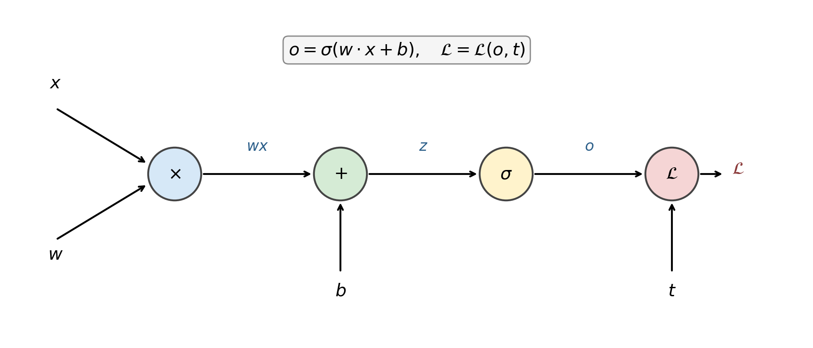
$$\frac{\partial \mathcal{L}}{\partial z} = \frac{\partial \mathcal{L}}{\partial h} \cdot \frac{\partial h}{\partial z}$$
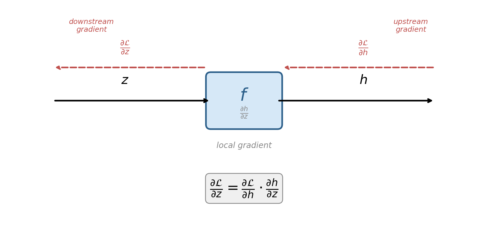
$$\frac{\partial \mathcal{L}}{\partial x} = \frac{\partial \mathcal{L}}{\partial z} \cdot \frac{\partial z}{\partial x}, \qquad \frac{\partial \mathcal{L}}{\partial y} = \frac{\partial \mathcal{L}}{\partial z} \cdot \frac{\partial z}{\partial y}$$
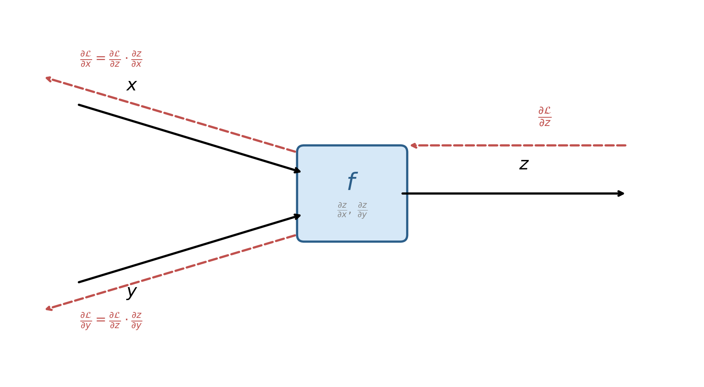
$$\frac{\partial \mathcal{L}}{\partial z} = \frac{\partial \mathcal{L}}{\partial a} \cdot \frac{\partial a}{\partial z} + \frac{\partial \mathcal{L}}{\partial b} \cdot \frac{\partial b}{\partial z}$$
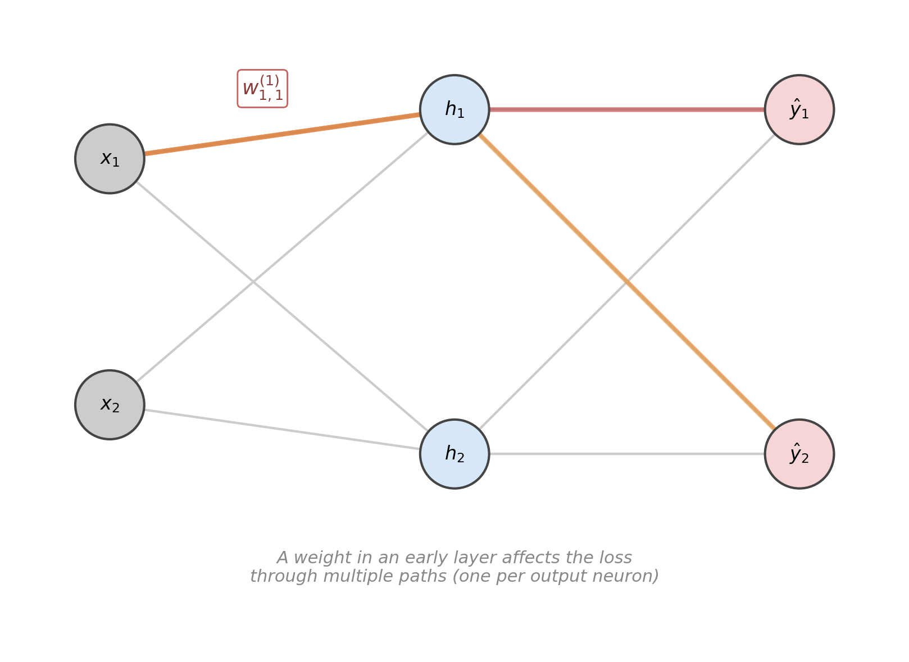
$$\frac{\partial o}{\partial z} = \sigma(z)(1 - \sigma(z)) = o(1 - o)$$
$$\frac{\partial \mathcal{L}}{\partial y} = y - t$$
$$\frac{\partial \mathcal{L}}{\partial W} = \frac{\partial \mathcal{L}}{\partial z} \cdot x^\top, \qquad \frac{\partial \mathcal{L}}{\partial x} = W^\top \cdot \frac{\partial \mathcal{L}}{\partial z}$$
$$x = \begin{bmatrix} -1 \\ 3 \end{bmatrix}, \quad w = \begin{bmatrix} 1 \\ 2 \end{bmatrix}, \quad t = 2$$
| Step | Operation | Result |
|---|---|---|
| 1 | $w_1 \cdot x_1 = 1 \cdot (-1)$ | $-1$ |
| 2 | $w_2 \cdot x_2 = 2 \cdot 3$ | $6$ |
| 3 | $z = (-1) + 6$ | $5$ |
| 4 | $y = \max(0, 5)$ | $5$ |
| 5 | $\mathcal{L} = \frac{1}{2}(5 - 2)^2$ | $4.5$ |
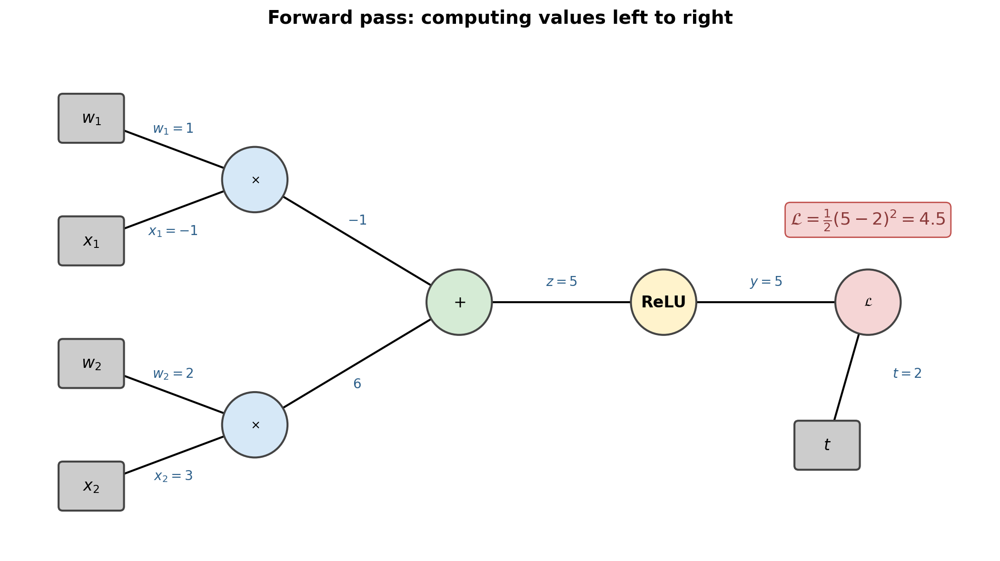
$$\nabla_w \mathcal{L} = \begin{bmatrix} -3 \\ 9 \end{bmatrix}$$
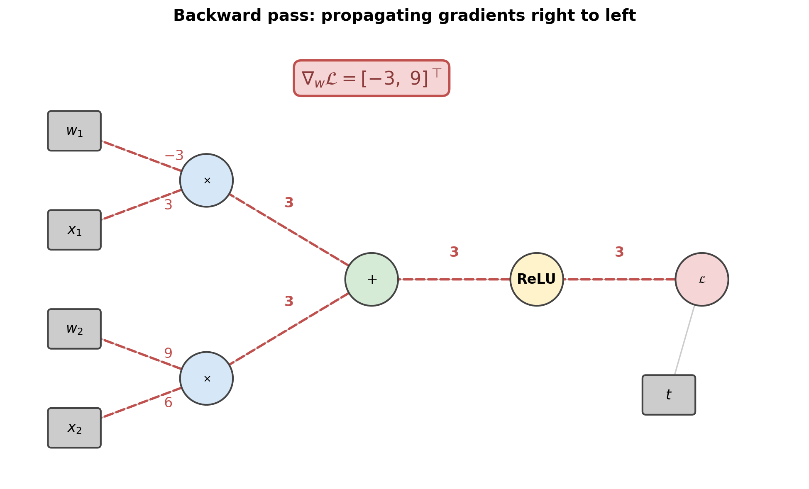
$$w \leftarrow \begin{bmatrix} 1 + 3\eta \\ 2 - 9\eta \end{bmatrix}$$
$$z^{(\ell)} = W^{(\ell)} h^{(\ell-1)} + b^{(\ell)}, \qquad h^{(\ell)} = \phi(z^{(\ell)})$$
$$\frac{\partial \mathcal{L}}{\partial W^{(\ell)}} = \delta^{(\ell)} \, h^{(\ell-1)\top}, \qquad \frac{\partial \mathcal{L}}{\partial b^{(\ell)}} = \delta^{(\ell)}$$
$$\delta^{(\ell-1)} = \left(W^{(\ell)\top} \delta^{(\ell)}\right) \odot \phi'(z^{(\ell-1)})$$
$$\frac{\partial E}{\partial \theta_l} = \begin{cases} \delta_l & \text{output layer} \\ \phi_l & \text{hidden layers} \end{cases}$$
$$W_{ij} \leftarrow W_{ij} - \eta \, \mathcal{O}_i \, \Delta_j, \qquad \theta_l \leftarrow \theta_l - \eta \, \Delta_l$$
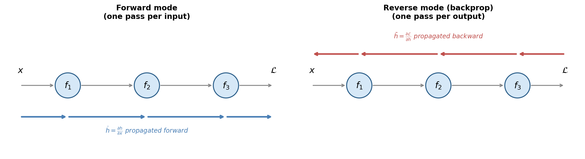
.backward() traverses the tape in reverse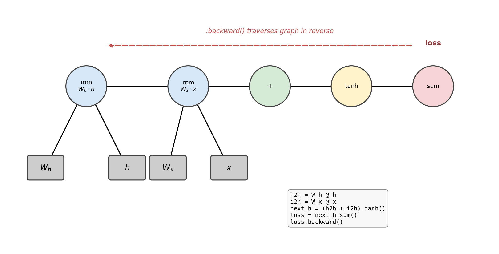
$$\frac{\partial \mathcal{L}}{\partial \theta_i} \approx \frac{\mathcal{L}(\theta_i + \epsilon) - \mathcal{L}(\theta_i - \epsilon)}{2\epsilon}$$
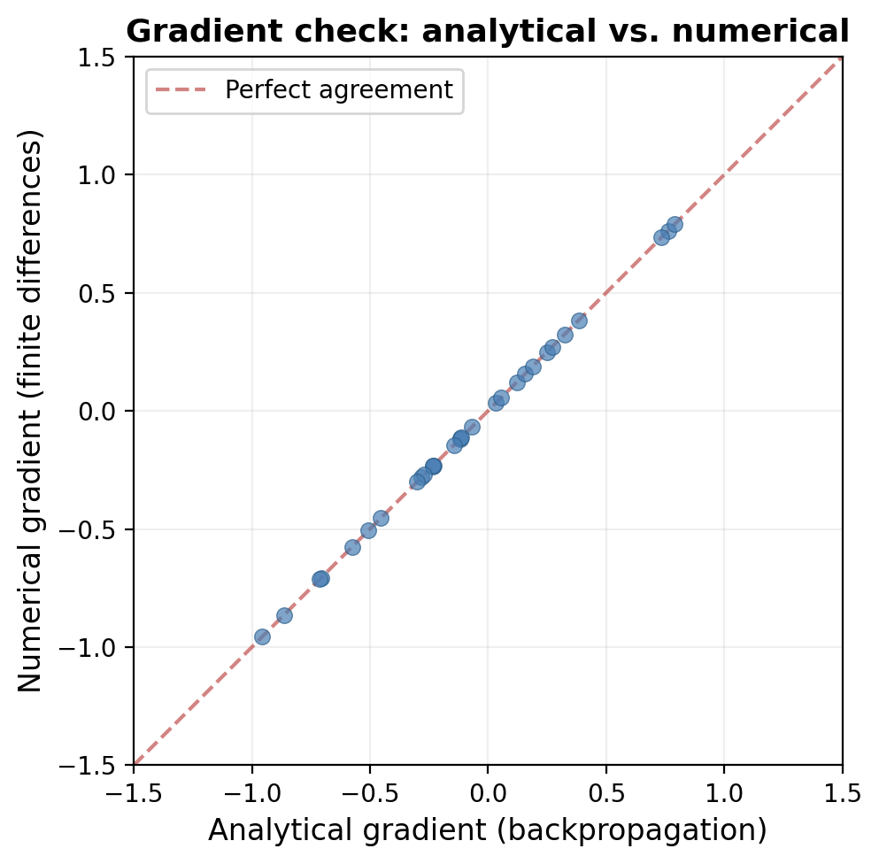
Value stores: scalar data, gradient, backward function, children__mul__, __add__) builds the graph implicitly+= (handles fan-out)backward() performs a topological sort of the graph_backward() applies its local gradient ruley = (w1*x1 + w2*x2).relu(), then squared-error lossloss.backward()Value handles scalars -- real networks need tensorsdata, creators, creation_op, grad__add__ returns a new Tensor that remembers its parents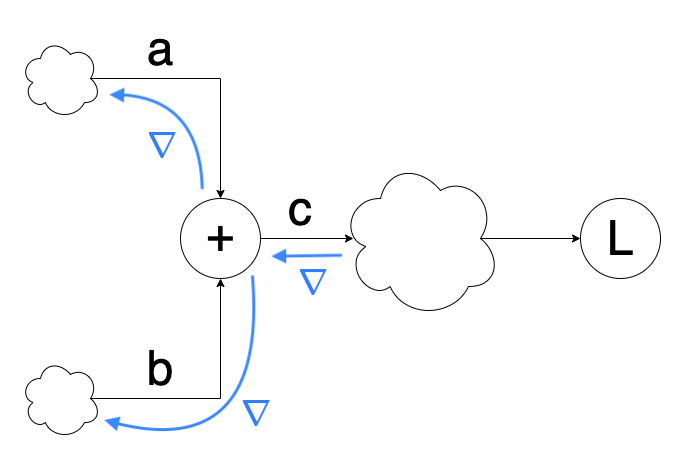
d = a + b, e = b + c, f = d + e -- $b$ has two paths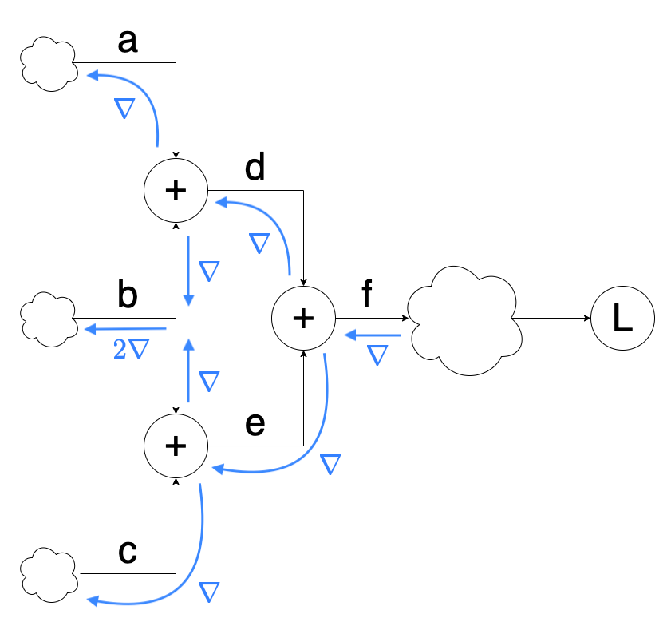
children (id $\to$ pending count)+=autograd=True flag distinguishes tracked leaves from literalscreators=[...], creation_op="name"creation_op and calls creator.backward(local_grad)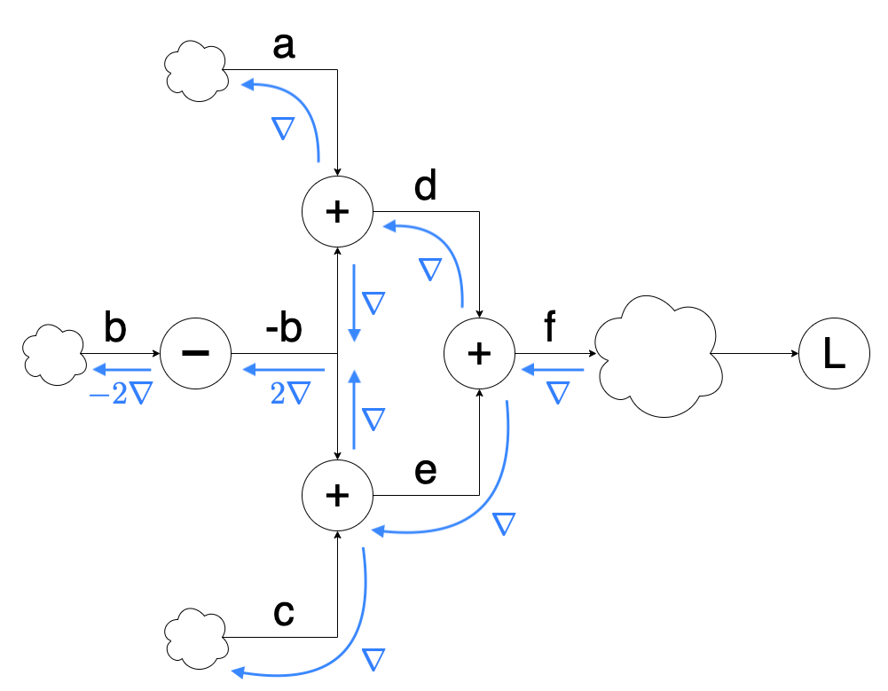
__add__, __sub__, __neg__ -- pointwise arithmetic__mul__ -- pointwise productmm -- matrix producttranspose -- rearrange axessum, expand -- reduction and broadcast (duals of each other)sum(dim) reduces a dimension -- backward calls expandexpand(dim, copies) broadcasts along a new axis -- backward calls sumimport numpy as np
class Tensor:
def __init__(self, data, autograd=False, creators=None, creation_op=None):
self.data = np.array(data)
self.autograd = autograd
self.grad = None
self.id = id(self)
self.creators = creators
self.creation_op = creation_op
self.children = {}
if(creators):
for c in creators:
if(self.id not in c.children):
c.children[self.id] = 1
else:
c.children[self.id] += 1
def all_children_grads_accounted_for(self):
for cid, cnt in self.children.items():
if(cnt != 0):
return False
return True
def backward(self, grad=None, grad_origin=None):
if(self.autograd):
if(grad is None):
grad = Tensor(np.ones_like(self.data))
if(grad_origin):
if(self.children[grad_origin.id] == 0):
raise Exception("cannot backprop more than once")
else:
self.children[grad_origin.id] -= 1
if(self.grad is None):
self.grad = grad
else:
self.grad += grad
assert grad.autograd == False
if(self.creators and (self.all_children_grads_accounted_for() or not grad_origin)):
if(self.creation_op == "add"):
self.creators[0].backward(self.grad, self)
self.creators[1].backward(self.grad, self)
if(self.creation_op == "neg"):
self.creators[0].backward(self.grad.__neg__())
if(self.creation_op == "sub"):
self.creators[0].backward(Tensor(self.grad.data), self)
self.creators[1].backward(Tensor(self.grad.__neg__().data), self)
if(self.creation_op == "mul"):
self.creators[0].backward(self.grad * self.creators[1], self)
self.creators[1].backward(self.grad * self.creators[0], self)
if(self.creation_op == "transpose"):
self.creators[0].backward(self.grad.transpose())
if("sum" in self.creation_op):
dim = int(self.creation_op.split("_")[1])
self.creators[0].backward(self.grad.expand(dim, self.creators[0].data.shape[dim]))
if("expand" in self.creation_op):
dim = int(self.creation_op.split("_")[1])
self.creators[0].backward(self.grad.sum(dim))
if(self.creation_op == "mm"):
self.creators[0].backward(self.grad.mm(self.creators[1].transpose()))
self.creators[1].backward(self.grad.transpose().mm(self.creators[0]).transpose())
if(self.creation_op == "sigmoid"):
ones = Tensor(np.ones_like(self.grad.data))
self.creators[0].backward(self.grad * (self * (ones - self)))
if(self.creation_op == "tanh"):
ones = Tensor(np.ones_like(self.grad.data))
self.creators[0].backward(self.grad * (ones - (self * self)))
if(self.creation_op == "index_select"):
new_grad = np.zeros_like(self.creators[0].data)
indices_ = self.index_select_indices.data.flatten()
grad_ = grad.data.reshape(len(indices_), -1)
for i in range(len(indices_)):
new_grad[indices_[i]] += grad_[i]
self.creators[0].backward(Tensor(new_grad))
if(self.creation_op == "cross_entropy"):
dx = self.softmax_output - self.target_dist
self.creators[0].backward(Tensor(dx))
def __add__(self, other):
if(self.autograd and other.autograd):
return Tensor(self.data + other.data,
autograd=True,
creators=[self, other],
creation_op="add")
return Tensor(self.data + other.data)
def __neg__(self):
if(self.autograd):
return Tensor(self.data * -1,
autograd=True,
creators=[self],
creation_op="neg")
return Tensor(self.data * -1)
def __sub__(self, other):
if(self.autograd and other.autograd):
return Tensor(self.data - other.data,
autograd=True,
creators=[self, other],
creation_op="sub")
return Tensor(self.data - other.data)
def __mul__(self, other):
if(self.autograd and other.autograd):
return Tensor(self.data * other.data,
autograd=True,
creators=[self, other],
creation_op="mul")
return Tensor(self.data * other.data)
def sum(self, dim):
if(self.autograd):
return Tensor(self.data.sum(dim),
autograd=True,
creators=[self],
creation_op="sum_"+str(dim))
return Tensor(self.data.sum(dim))
def expand(self, dim, copies):
trans_cmd = list(range(0, len(self.data.shape)))
trans_cmd.insert(dim, len(self.data.shape))
new_data = self.data.repeat(copies).reshape(list(self.data.shape) + [copies]).transpose(trans_cmd)
if(self.autograd):
return Tensor(new_data,
autograd=True,
creators=[self],
creation_op="expand_"+str(dim))
return Tensor(new_data)
def transpose(self):
if(self.autograd):
return Tensor(self.data.transpose(),
autograd=True,
creators=[self],
creation_op="transpose")
return Tensor(self.data.transpose())
def mm(self, x):
if(self.autograd):
return Tensor(self.data.dot(x.data),
autograd=True,
creators=[self, x],
creation_op="mm")
return Tensor(self.data.dot(x.data))
def sigmoid(self):
if(self.autograd):
return Tensor(1.0 / (1.0 + np.exp(-self.data)),
autograd=True,
creators=[self],
creation_op="sigmoid")
return Tensor(1.0 / (1.0 + np.exp(-self.data)))
def tanh(self):
if(self.autograd):
return Tensor(np.tanh(self.data),
autograd=True,
creators=[self],
creation_op="tanh")
return Tensor(np.tanh(self.data))
def index_select(self, indices):
if(self.autograd):
new = Tensor(self.data[indices.data],
autograd=True,
creators=[self],
creation_op="index_select")
new.index_select_indices = indices
return new
return Tensor(self.data[indices.data])
def cross_entropy(self, target_indices):
temp = np.exp(self.data)
softmax_output = temp / np.sum(temp, axis=len(self.data.shape)-1, keepdims=True)
t = target_indices.data.flatten()
p = softmax_output.reshape(len(t), -1)
target_dist = np.eye(p.shape[1])[t]
loss = -(np.log(p) * target_dist).sum(1).mean()
if(self.autograd):
out = Tensor(loss,
autograd=True,
creators=[self],
creation_op="cross_entropy")
out.softmax_output = softmax_output
out.target_dist = target_dist
return out
return Tensor(loss)
def __repr__(self):
return str(self.data)
loss.backward()w.data -= lr * w.grad.datapredictions = inputs.mm(weights[0]).mm(weights[1])
loss = ((predictions - targets)*(predictions - targets)).sum(0)
loss.backward()
class SGD:
def step(self, zero=True):
for p in self.parameters:
p.data -= self.lr * p.grad.data
if zero: p.grad.data *= 0
Layer base class holds a list of trainable parametersLinear(n_in, n_out): affine map inputs.mm(W) + b.expand(...)Sequential([...]) chains layers and aggregates parametersnn.Module / nn.Sequentialbackward and one layer wrapperMSELoss: $(y - t)^2$ summed over the batchCrossEntropyLoss: softmax + negative log-likelihood in one op$$\frac{\partial \mathcal{L}}{\partial z} = \text{softmax}(z) - \text{target}$$
index_selectLinear(x) + Linear(h), then sigmoid or tanhmm, +, *, sigmoid, tanhclass Layer:
def __init__(self):
self.parameters = []
def get_parameters(self):
return self.parameters
class Linear(Layer):
def __init__(self, n_inputs, n_outputs):
super().__init__()
w = np.random.randn(n_inputs, n_outputs) * np.sqrt(2.0 / n_inputs)
self.w = Tensor(w, autograd=True)
self.b = Tensor(np.zeros(n_outputs), autograd=True)
self.parameters.append(self.w)
self.parameters.append(self.b)
def forward(self, inputs):
return inputs.mm(self.w) + self.b.expand(0, len(inputs.data))
class Sequential(Layer):
def __init__(self, layers=[]):
super().__init__()
self.layers = layers
def add(self, layer):
self.layers.append(layer)
def forward(self, inputs):
outputs = inputs
for layer in self.layers:
outputs = layer.forward(outputs)
return outputs
def get_parameters(self):
params = []
for l in self.layers:
params += l.get_parameters()
return params
class Sigmoid(Layer):
def __init__(self):
super().__init__()
def forward(self, inputs):
return inputs.sigmoid()
class Tanh(Layer):
def __init__(self):
super().__init__()
def forward(self, inputs):
return inputs.tanh()
class MSELoss(Layer):
def __init__(self):
super().__init__()
def forward(self, outputs, targets):
return ((outputs - targets) * (outputs - targets)).sum(0)
class CrossEntropyLoss(Layer):
def __init__(self):
super().__init__()
def forward(self, outputs, targets):
return outputs.cross_entropy(targets)
class Embedding(Layer):
def __init__(self, vocab_size, dim):
super().__init__()
self.vocab_size = vocab_size
self.dim = dim
self.weight = Tensor((np.random.rand(vocab_size, dim) - 0.5) / dim,
autograd=True)
self.parameters.append(self.weight)
def forward(self, input):
return self.weight.index_select(input)
class SGD:
def __init__(self, parameters, lr=0.1):
self.parameters = parameters
self.lr = lr
def zero(self):
for p in self.parameters:
p.grad.data *= 0
def step(self, zero=True):
for p in self.parameters:
p.data -= self.lr * p.grad.data
if(zero):
p.grad.data *= 0
class LSTMCell(Layer):
def __init__(self, n_inputs, n_hidden, n_output):
super().__init__()
self.n_inputs = n_inputs
self.n_hidden = n_hidden
self.n_output = n_output
self.xf = Linear(n_inputs, n_hidden)
self.xi = Linear(n_inputs, n_hidden)
self.xo = Linear(n_inputs, n_hidden)
self.xc = Linear(n_inputs, n_hidden)
self.hf = Linear(n_hidden, n_hidden, bias=False)
self.hi = Linear(n_hidden, n_hidden, bias=False)
self.ho = Linear(n_hidden, n_hidden, bias=False)
self.hc = Linear(n_hidden, n_hidden, bias=False)
self.w_ho = Linear(n_hidden, n_output, bias=False)
self.parameters += self.xf.get_parameters()
self.parameters += self.xi.get_parameters()
self.parameters += self.xo.get_parameters()
self.parameters += self.xc.get_parameters()
self.parameters += self.hf.get_parameters()
self.parameters += self.hi.get_parameters()
self.parameters += self.ho.get_parameters()
self.parameters += self.hc.get_parameters()
self.parameters += self.w_ho.get_parameters()
def forward(self, input, hidden):
prev_hidden = hidden[0]
prev_cell = hidden[1]
f = (self.xf.forward(input) + self.hf.forward(prev_hidden)).sigmoid()
i = (self.xi.forward(input) + self.hi.forward(prev_hidden)).sigmoid()
o = (self.xo.forward(input) + self.ho.forward(prev_hidden)).sigmoid()
g = (self.xc.forward(input) + self.hc.forward(prev_hidden)).tanh()
c = (f * prev_cell) + (i * g)
h = o * c.tanh()
output = self.w_ho.forward(h)
return output, (h, c)
def init_hidden(self, batch_size=1):
init_hidden = Tensor(np.zeros((batch_size, self.n_hidden)), autograd=True)
init_cell = Tensor(np.zeros((batch_size, self.n_hidden)), autograd=True)
init_hidden.data[:, 0] += 1
init_cell.data[:, 0] += 1
return (init_hidden, init_cell)
import numpy as np
np.random.seed(0)
data = [([0, 0], [0]),
([0, 1], [1]),
([1, 0], [0]),
([1, 1], [1])]
inputs = Tensor([x for x, _ in data], autograd=True)
targets = Tensor([y for _, y in data], autograd=True)
model = Sequential([Linear(2, 3),
Tanh(),
Linear(3, 1),
Sigmoid()])
optim = SGD(parameters=model.get_parameters(), lr=1.0)
criterion = MSELoss()
for i in range(10):
# predict
outputs = model.forward(inputs)
# compare
loss = criterion.forward(outputs, targets)
# learn
loss.backward()
optim.step()
print(loss.data[0])
# 0.8996328895668841
# 0.6665536605357933
# 0.4866235511803159
# 0.33677783404701206
# 0.22209157349430386
# 0.14466827659778225
# 0.096834947349644
# 0.0681297535891789
# 0.050548763814268996
# 0.03928647341172262
.backward()